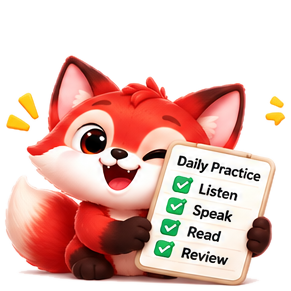

01 / DAILY PRACTICE
Make a little room for the language.
Get a short lesson shaped by your goal, level, and recent learning. Speak, write, listen, or review—then pick up where you left off tomorrow.
A little practice for a lot of life
Practice real language every day, get instant feedback on grammar, tone, and clarity, and improve with a plan made just for you.
Made for your real life
At work, on the move, and everywhere in between.
TUESDAY · DAILY PRACTICE

Tell a teammate why you see a project differently.
Illustrative app preview — not a screenshot
18 languages
to make your own
A useful little loop
Practice built around what you want to say—and what will help you say it better next time.
Share your goal, current level, and the time you have for practice.
Your coach picks a short speaking, writing, listening, or review activity.
Put your own words to work in a useful, everyday situation.
See what came through, what to adjust, and a stronger way to say it.
Try the improved version. Revisit tricky words and patterns later.
A peek inside
Whether it’s a meeting, a café, or a new city, a little rehearsal can make the real conversation feel more familiar.
This is a fixed example for browsing. It does not connect to the live coach or use anything you type.
Tell your team why you think a different approach could work better.
“I am responsible of the launch, and I think we should wait one more week.”
Say “responsible for,” not “responsible of.”
“I’m responsible for the launch. Could we consider waiting one more week?”
Clearer phrasing, with room for a collaborative tone. In the app, you can retry in your own words.
Practice that has a point
Small, focused activities help you practise what matters now and keep the useful bits close for later.
Get a short lesson shaped by your goal, level, and recent learning. Speak, write, listen, or review—then pick up where you left off tomorrow.
Learn how your words land: grammar, vocabulary, tone, and clarity. Speaking feedback can also cover pronunciation, pace, and filler words.
Try conversations for interviews, work meetings, travel, cafés, doctor’s appointments, and small talk.
Words, phrases, and grammar patterns you’ve struggled with can return as short review cards.
Keep an eye on your streak, daily goal, mastery levels, and progress over time.
A coach that pays attention
The coach keeps track of recurring learning patterns—like a grammar point that trips you up or a word you want to remember. It can bring those back for review and adapt the next lesson as you progress.
You stay in charge.
When the coach proposes a change to your plan or settings, you can review it, edit it, accept it, or say “not now.”
A note on your practice
Voice recordings are deleted after transcription. Transcripts and learning progress are used by the app to give feedback and shape future practice. A lesson you’ve already loaded can be answered offline and queued; some coach actions need an internet connection.
Good to know
Still have a question? [NEEDS CONFIRMATION: support email]
You can choose from 18 target languages: English, Spanish, French, German, Italian, Portuguese, Japanese, Korean, Mandarin, Filipino, Indonesian, Vietnamese, Thai, Arabic, Hindi, Dutch, Russian, and Turkish. Onboarding also lets you search a broad list for your native language.
Your plan starts with your goal, level, and available time. The coach can use your recent answers and recurring learning patterns to choose a useful next lesson and bring weaker items back for review.
A lesson you’ve already loaded can be answered offline and queued for feedback when you reconnect. Review cards can also be used offline. Some coach actions need an internet connection.
Recordings are used to make a transcript and are deleted after transcription. Transcripts and learning progress are used by the app for feedback, adaptation, and review.
The sample on this page is fixed and is not connected to the coach. In the app, lessons and role-plays are coach-led practice, with feedback after your response—not a conversation with other users.
Help us shape Folingoo
Tell us where to send your beta access instructions. We’ll follow up by email.